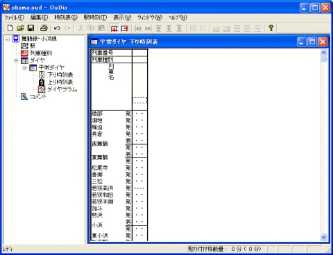
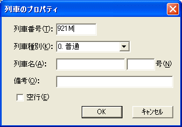
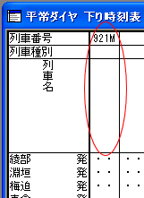
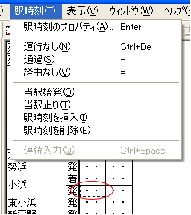
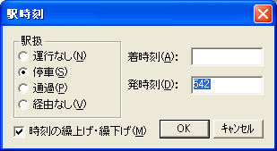
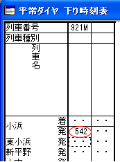
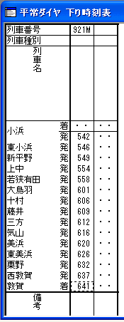

『時刻表ビュー』に、列車を入力します。
[路線ビュー]の[下り時刻表]か[上り時刻表]アイコンをクリックしてください。
・・・ 『作業領域』に、『時刻表ビュー]が現れます。

（図：時刻表ビュー）
１． 『時刻表ビュー』のフォーカスセルを、一番右・一番上の[列車番号]行に移してから、メニュー[時刻表]→[列車のプロパティ]を選択してください。
・・・ [列車のプロパティ]ダイアログが開きます。
 『時刻表ビュー』のフォーカスセルが一番右・一番上の[列車番号]行にある状態で、
[Ctrl]+[Enter] キーを押しても、同じ効果があります。
『時刻表ビュー』のフォーカスセルが一番右・一番上の[列車番号]行にある状態で、
[Ctrl]+[Enter] キーを押しても、同じ効果があります。
 『時刻表ビュー』の一番右・一番上の[列車番号]行をダブルクリックしても、同じ効果があります。
『時刻表ビュー』の一番右・一番上の[列車番号]行をダブルクリックしても、同じ効果があります。
 『時刻表ビュー』のフォーカスセルが一番右・一番上の[列車番号]行にある状態で、キーボードから列車番号の入力を開始することができます。
『時刻表ビュー』のフォーカスセルが一番右・一番上の[列車番号]行にある状態で、キーボードから列車番号の入力を開始することができます。
 『時刻表ビュー』のフォーカスセルが[列車種別]にある状態で、キーボードから"0"〜"9"
の数字キーを押すことにより、その列車の列車種別を指定することができます。
『時刻表ビュー』のフォーカスセルが[列車種別]にある状態で、キーボードから"0"〜"9"
の数字キーを押すことにより、その列車の列車種別を指定することができます。
２． [列車のプロパティ]ダイアログに、列車の情報を入力してください。

（図：列車のプロパティ）
[列車のプロパティ]の項目には、以下のような意味があります。
| [列車番号] | 列車番号を指定してください。なければ空欄でかまいません。 |
| [列車種別] | 列車種別を、ドロップダウンリストから選択してください。 |
| [列車名] | 列車の愛称名と号数を入力してください。なければ空欄でかまいません。 |
| [備考] |
『時刻表ビュー』の最下段の[備考]欄に表示するテキストを指定してください。なければ空欄でかまいません。 |
| [空行] | チェックすると、時刻表に空行を挿入します。列車のデータを入力する場合は、チェックしないでください。 |
３． [列車のプロパティ]ダイアログで、列車の情報の入力が終わったら、[OK] ボタンを押してください。
・・・ [列車のプロパティ]ダイアログが消えます。『時刻表ビュー』に、入力した列車の情報が追加されます。

４． フォーカスセルを、追加された列車の始発駅の位置に移動してください。
５． メニュー[時刻表]→[駅時刻のプロパティ]を選択してください。

（図：時刻表ビュー この例では、始発駅は小浜です）
・・・ [駅時刻]ダイアログ が開きます。
 『時刻表ビュー』の、編集したい時刻のセルをダブルクリックしても、同じ効果があります。
『時刻表ビュー』の、編集したい時刻のセルをダブルクリックしても、同じ効果があります。
 編集したい時刻のセルにフォーカスセルを移動させた状態で、キーボードから時刻入力を開始することができます。
編集したい時刻のセルにフォーカスセルを移動させた状態で、キーボードから時刻入力を開始することができます。
６． [駅時刻] ダイアログに、その駅の時刻情報を入力してください。

（図：駅時刻ダイアログ）
[駅時刻]ダイアログの項目には、以下のような意味があります。
| [駅扱] | その駅での扱いを指定してください。 | |
| [運行なし] | 列車は、この駅では運行されません。始発駅の前、終着駅の後は、この属性になります。 | |
| [停車] | 列車は、この駅に停車します。 | |
| [通過] | 列車は、この駅を通過します（運転停車は、[通過]に含めます）。 | |
| [経由なし] | 列車は、この駅では運行されません。[運行なし]と同じですが、時刻表での表示は『他線経由』を示す "||" となります。 | |
| [駅時刻の繰上げ・繰下げ] | 駅時刻を修正した場合の動作の指定です。 駅時刻が空のところに入力を行う場合には、この選択には効果がありません。
|
|
| [着時刻] | その駅での着時刻を指定してください。時刻の書式は、２４時間制で、"000"〜"2359" の範囲です。 | |
| [発時刻] | その駅での発時刻を指定してください。時刻の書式は、２４時間制で、"000"〜"2359" の範囲です。 | |
[着時刻]・[発時刻]は、[駅扱]によって、入力する必要があるかないかが変わります。
[着時刻]か[発時刻] へ時刻を入力すると、駅扱は自動的に[停車]に変わります。
※ [駅扱]が[停車]に変わるのは、時刻入力後にフォーカスが移動したときか、 [OK] ボタンを押したときです。
ただし、[駅扱]を[運行なし]以外から[運行なし]に切り替えた場合は、 [着時刻]・[発時刻] への時刻入力はできません。
[着時刻] ・ [発時刻] の両方を指定することができます。
[着時刻] ・[発時刻]のうち、一方を『指定なし』(空欄)にすることもできます。
着時刻は分からず、発時刻だけが分かっている場合は、 [着時刻] は空欄にしたまま [発時刻] のみを入力してください。
※ [着時刻]・[発時刻]両方を『指定なし』にすることもできますが、この場合はダイヤグラムが正しく描画されません。
[着時刻] ・ [発時刻] どちらも、時刻の入力は任意です。
通過駅では、通常は、 [着時刻] ・ [発時刻] どちらも入力する必要はありません。
運転停車を行う駅では、[駅扱] を [通過] にしたうえで、 [着時刻] ・ [発時刻] を入力してください。
また、通過駅に [発時刻] だけを入力することにより、ダイヤグラム上の列車線（スジ）を微調整することができます。
[着時刻]・[発時刻] への入力はできません。
７． [駅時刻]ダイアログで、時刻の情報の入力が終わったら、[OK] ボタンを押してください。
・・・ [駅時刻]ダイアログが消えます。『時刻表ビュー』に、入力した時刻が表示されます。

８． フォーカスを次の駅に移動しながら、 ５．〜７． を繰り返して、終着駅までの時刻を入力してください。

９． １．〜８． を繰り返して、列車のデータを順次入力してください。
※ 列車の入力についての補足の項も、参照してください。